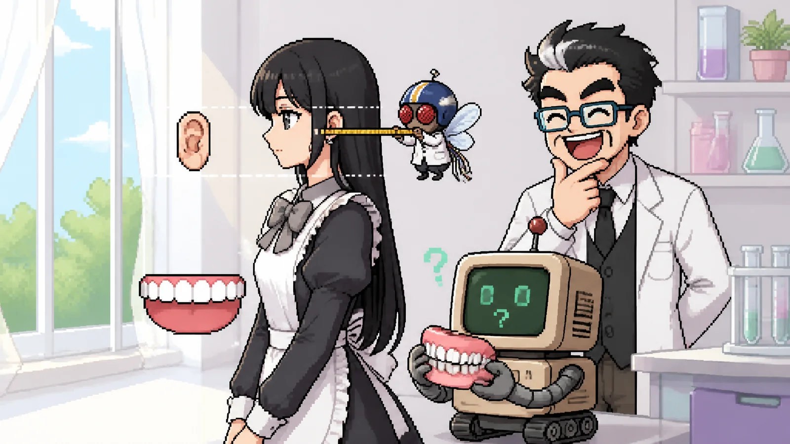
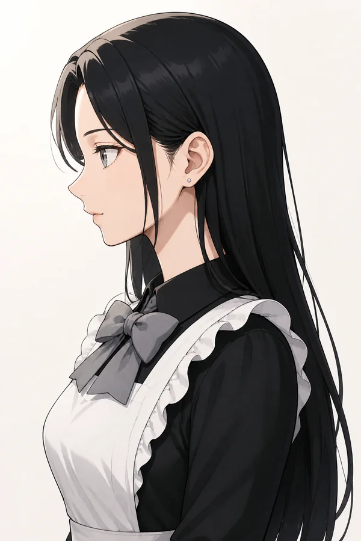
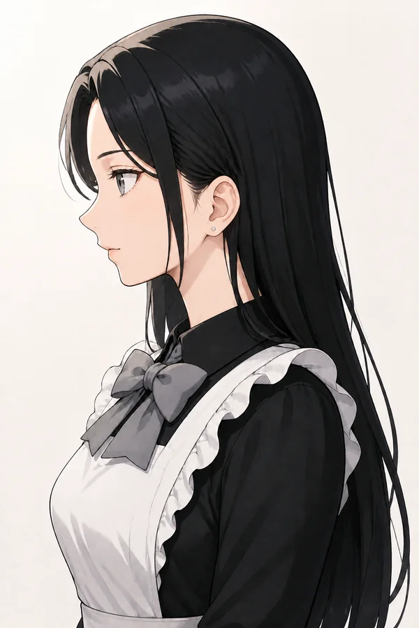

오늘의 과제

박사오늘은 코·귀·입. 시아가 모델, 웃는 입은 내가 맡는다.

주판봇코는 콧구멍까지, 귀는 남는 데에, 이는 보이는 것만! 효율적이죠!

초파리 연구원보이는 것만 그리면 방향이 틀려. 안 보이는 이줄까지 이어 그려 보자.

시아제 귀는… 어디에 붙어 있었죠?

이번 모델은 시아, 손님 모델은 박사입니다. 주판봇은 코에 콧구멍까지 진하게, 귀는 빈자리에 적당히 붙입니다. 초파리는 보이지 않는 이까지 이어 그려 봅니다.
그림 실력·코드·수식을 몰라도 됩니다. 실험을 눌러 보며 따라오세요.
실제 코에서 모서리 선(면이 꺾이는 선)만 뽑아 두고, 그중 몇 개를 그리느냐로 단순함을 정합니다
같은 사진을 작은 스티커로 만들 때와 큰 포스터로 만들 때, 남겨야 할 선의 양이 다릅니다.
작화 설정에서는 '코는 코끝 아래 짧은 선 하나, 비스듬할 때만 콧날 그림자' 같은 규칙을 캐릭터마다 적어 둡니다. 규칙의 정보량은 눈·입의 정보량과 함께 정합니다.


코 정보량을 눈과 1 이내로 맞추면 얼굴이 한 화풍으로 읽힙니다.
코끝 점(1)이나 그림자만(2)은 단순한 그림, 코끝 + 콧날 조금(3)은 애니풍에서 흔하고, 빗금(4)·콧방울까지(5)는 실감 나는 그림에 어울립니다.
남성 코는 콧뿌리가 깊고 콧날이 길고 곧게, 여성 코는 콧뿌리가 완만하고 콧날이 짧게 그리는 경향이 있습니다. 선을 고르는 틀은 같습니다.
AI가 단순한 애니풍 얼굴을 그렸는데 코만 콧구멍과 콧방울이 또렷합니다. 입체감이 있으니 괜찮을까요?
코만 정보량이 높아 얼굴에서 튑니다. 'small nose shown only by its tip, matching the simple eyes'처럼 다른 부위에 맞춘 정보량을 적어 다시 요청합니다. 6부 f6과 같은 실패입니다.
옆얼굴에서 귀는 눈 높이와 코끝 높이 사이에 붙고, 정면·옆·뒤로 돌수록 너비가 달라집니다

학교 수학으로 보면 — 사인 — 판이 돌아간 각도만큼 옆에서 보이는 길이의 비율입니다. 0°면 0, 90°면 1입니다.
| 식 조각 | 뜻 |
|---|---|
| 귀 너비 | 귀를 옆에서 봤을 때의 너비(예시 10) |
| 보는 각도 | 정면 0°, 옆 90°, 뒤 180° |
| 두께 | 판의 두께처럼 늘 보이는 몫(예시 1.5) |

스마트폰을 손에 들고 천천히 돌려 보면, 정면에서는 화면이 넓고 옆에서는 얇은 모서리만 보입니다.
3D 캐릭터 모델러는 귀를 머리 옆면보다 조금 뒤로, 눈~코끝 높이에 붙이고, 정면 카메라에서 귀가 얼굴 윤곽 밖으로 얼마나 튀어나오는지로 위치를 점검합니다.
귀 가운데를 눈 높이(50%)와 코끝 높이(72%)의 가운데, 약 61%에 두면 고개가 똑바로 섭니다(이 실험의 예시).
귀 너비는 정면 1.5, 45°에서 약 8.6, 옆 11.5로 커지고, 뒤로 돌수록 다시 좁아집니다.
귀는 귀둘레(바깥 테), 맞둘레(안쪽 굽은 테), 귀구슬(귓구멍 앞 작은 돌기), 귓불로 기억합니다. 이름은 몰라도 '바깥 테와 안쪽 테 두 줄'만 그려도 귀로 읽힙니다.

AI가 그린 시아 옆얼굴의 귀가 턱선 가까이 내려와 있습니다. 머리카락에 반쯤 가려졌으니 괜찮을까요?
가려져도 귀가 낮으면 고개를 숙인 듯 보입니다. 'ear placed between eye level and nose tip level'을 넣거나 귀 부분만 부분 수정으로 올립니다. 6부 f3과 같은 실패입니다.
입을 벌리면 아래턱만 돌아가므로, 정면에서 위 이줄은 가로 一로, 아래 이줄은 내려다본 U로 보입니다
학교 수학으로 보면 — 사인 — 기울어진 만큼 위에서 보이는 길이의 비율입니다. 2단계 귀 너비와 같은 계산입니다.
| 식 조각 | 뜻 |
|---|---|
| 이줄 깊이 | 앞니에서 어금니 끝까지의 길이(예시 10) |
| 벌린 각도 | 아래턱이 돌아간 각도 |
| sin | 기울어진 만큼 보이는 비율 |
상자 뚜껑을 살짝 열면 안쪽 바닥이 가늘게, 활짝 열면 넓게 보입니다.
애니메이션에서 소리치는 얼굴을 그릴 때는 위 이를 거의 안 보이게 一로 두고, 아래 이줄과 혀로 입속의 깊이를 보여 줍니다. 이를 하나씩 그리기 전에 덩어리로 잡아야, 크게 그려도 이가 들쭉날쭉하지 않습니다.
아래턱을 20° 벌리면 아래 이줄이 깊이의 34%만큼 둥글게 보이고, 30°면 절반이 보입니다.
위 이줄은 벌린 정도와 상관없이 一입니다. 위턱은 움직이지 않기 때문입니다.
이는 위 앞니를 아래 앞니보다 굵게, 송곳니는 취향에 따라 키웁니다. 크게 웃을 때 잇몸을 살짝 보이면 시원한 인상이 납니다.
AI가 크게 웃는 얼굴을 그렸는데 위·아래 이가 똑같은 가로줄로 나란합니다. 이가 고르니 괜찮을까요?
입속이 납작해 보여 웃음의 크기가 안 느껴집니다. 'upper teeth as a straight row, lower teeth curving as a U seen from above'를 넣어 다시 요청합니다.
비스듬히 본 벌린 입에서는 보이지 않는 이줄까지 이어 그려, 위·아래 어금니 줄이 안쪽 한 점으로 모이는지 확인합니다
긴 복도 끝을 보면 천장선과 바닥선이 한 점으로 모입니다. 복도 안이 보이지 않아도 그 점을 알면 문 위치를 그릴 수 있습니다.
작화 감독은 비스듬한 얼굴 수정 때 입 안쪽에 보이지 않는 이줄을 파란 선으로 그려 넣고, 어금니 방향을 그 선에 맞춰 고칩니다. 보이지 않는 곳을 그려 봐야 보이는 곳이 맞습니다.
모으는 정도를 75% 이상으로 두면 위·아래 어금니 줄이 턱 경첩 가까이 한 점으로 모여, 입속 깊이가 보입니다.
0~30%면 어금니가 정면을 향해 서 있어 입속만 앞을 보는 그림이 됩니다.
처음에는 이를 그리지 말고 점점 단순하게 — 검은 입속 → 혀와 이 덩어리 → 이줄 두 선 — 으로 줄여 생각하면 방향을 놓치지 않습니다.
AI가 비스듬히 웃는 얼굴을 그렸는데, 안쪽 어금니가 이쪽을 보고 서 있습니다. 얼핏 보면 괜찮은데 그대로 써도 될까요?
보는 사람은 이유를 몰라도 어색함을 느낍니다. 'three-quarter view, the back teeth recede inward toward the jaw hinge'를 넣거나 입속만 부분 수정으로 다시 그립니다. 6부 f4와 같은 실패입니다.
이 부에서 배운 원리를 그림 생성 AI(Genspark 등)로 직접 확인합니다. A는 이 페이지 그림을 실제로 만든 프롬프트, B는 원리를 하나 빼거나 바꾼 비교용 문장입니다.
참고 그림 내려받기: haru_anime_base · sia_anime_base · moa_anime_base · haru_sheet · sia_sheet · moa_sheet · doctor_sheet · fruitfly_sprites_6 · jupanbot_ref_genspark_v0 · pixel_style_ref_prev_cover
시아 옆얼굴의 귀가 눈~코끝 사이에 있고, 코가 다른 부위만큼 단순한지 봅니다.
첨부: refs/moa_anime_base.png, refs/moa_sheet.png, refs/haru_anime_base.png, refs/sia_anime_base.png, refs/doctor_sheet.png
Illustration, vertical 2:3. Art style: high-quality anime illustration, clean confident lineart, two-tone cel shading, natural adult proportions. Match the attached reference images exactly (face, hair, colors, accessories). All characters are adults in their twenties (the Professor is an adult man in his thirties); modest outfits exactly as described. Side-profile chest-up portrait facing LEFT of Sia (adult maid intern, long straight jet-black hair, no headdress, gray eyes, small silver earrings), wearing charcoal-black long-sleeved maid dress, large gray bow at the collar, long white frilled apron, hair tucked behind the ear so the whole ear is visible. The ear sits between eye level and nose-tip level, a little behind the middle of the head; the outer rim and the inner fold of the ear are drawn as two clear lines; small silver earring on the earlobe. The nose is simple: a short bridge and a small tip. Light from the upper left. Plain off-white studio background. No text, no letters, no numbers, no logos, no watermark, no revealing clothing, not childlike, no school uniform, not resembling any famous anime character.
Same image, keep the same framing. Change only: move the ear down so it sits near the jawline, below the nose-tip level. Still no text.

실제 결과: 귀가 반 개쯤 아래로 내려갔지만 요청한 턱선까지는 가지 않았습니다. 그래도 귀 아랫끝이 코끝보다 내려가 A보다 목이 길어 보이고 고개가 조금 숙여진 듯 읽힙니다. 차이가 작으니 두 그림의 귀 윗끝에 가로선을 그어 눈 높이와 비교해 보세요.
위 이는 一, 아래 이는 U, 어금니는 안쪽으로 모이는지 봅니다.
첨부: refs/moa_anime_base.png, refs/moa_sheet.png, refs/haru_anime_base.png, refs/sia_anime_base.png, refs/doctor_sheet.png
Illustration, wide 16:9. Art style: high-quality anime illustration, clean confident lineart, two-tone cel shading, natural adult proportions. Match the attached reference images exactly (face, hair, colors, accessories). All characters are adults in their twenties (the Professor is an adult man in his thirties); modest outfits exactly as described. Three-quarter view chest-up portrait of the Professor (adult male scientist in his thirties, dark charcoal spiky hair with a white streak at the front, very thick black eyebrows, teal rectangular glasses), wearing white lab coat over a black vest, white shirt and black tie, laughing heartily with his mouth wide open. Inside the mouth: the upper teeth appear as a nearly straight horizontal row, the lower teeth curve as a U seen slightly from above, the back teeth recede inward toward the jaw hinge (not facing the viewer), the upper front teeth slightly larger than the lower ones, tongue visible. Adult male. Light from the upper left. Plain off-white studio background. No text, no letters, no numbers, no logos, no watermark, no revealing clothing, not childlike, no school uniform, not resembling any famous anime character.
Same image, keep the same framing. Change only: draw the lower teeth as a straight flat horizontal row exactly like the upper teeth, and the back teeth facing the viewer. Still no text.
실제 결과: 거의 반영되지 않았습니다. 입이 조금 더 벌어지고 위 이가 흰 띠 하나로 단순해졌지만, 아래 이는 여전히 둥근 U이고 어금니도 안쪽으로 들어갑니다. 도구가 이줄을 바르게 그리려는 쪽으로 강하게 기울어 있다는 사례입니다(6부 f4도 같은 까닭으로 재현되지 않았습니다).
이 부의 원리를 내 손으로 프롬프트에 옮겨 보는 과제 5개입니다. 과제마다 목표 → 순서 → 넣을 프롬프트 → 확인할 것 → 예상 결과 → 자주 생기는 문제 순서로 적었습니다. 예상 결과 그림은 아래 프롬프트로 실제로 만든 그림입니다(아직 받지 않은 그림은 '그림 준비 중'). 요청과 다르게 나온 곳은 '실제 결과'에 그대로 적었습니다. 결과는 매번 조금씩 다르니, 그림이 똑같지 않아도 '확인할 것'이 맞으면 성공입니다.
목표3부 1단계의 정보량 원리대로, 눈의 그려 넣은 양에 맞춰 코를 '코끝 + 짧은 콧날'로 적어 모아의 정면 얼굴을 만듭니다.
왜 이 연습인가코에 대해 아무것도 적지 않으면 도구가 코를 콧구멍까지 진하게 그리거나 아예 지우는 일이 있습니다(6부 f6). 코의 표현을 눈과 같은 수준으로 적으면 얼굴이 한 화풍으로 나옵니다.
첨부할 참고 그림: refs/moa_anime_base.png, refs/moa_sheet.png — 참고 그림은 위 직접 만들어 보기에서 내려받을 수 있습니다.
Illustration, vertical 2:3. Art style: high-quality anime illustration, clean confident lineart, two-tone cel shading, natural adult proportions. Match the attached reference images exactly (face, hair, colors, accessories). All characters are adults in their twenties (the Professor is an adult man in his thirties); modest outfits exactly as described. Front view, chest-up portrait of Moa (adult maid intern, long ash-beige wavy hair, white frilled maid headband with a white ribbon over her LEFT ear, amber eyes), wearing camel knit cardigan over a white blouse, red and navy plaid bow tie, white frilled apron, gentle smile, looking at the viewer. Level of detail (most important): anime eyes with a few soft lash strands and two highlights; the nose shown only as a small tip with a short faint bridge line, no nostrils; a simple mouth with a hint of the lower lip; the same level of detail on the eyes, nose and mouth. Light from the upper left. Plain off-white studio background. No text, no letters, no numbers, no logos, no watermark, no revealing clothing, not childlike, no school uniform, not resembling any famous anime character.
실제 결과: 성공. 코는 콧구멍 없이 작은 코끝만 있고, 눈·입과 그려 넣은 양이 비슷해 한 화풍으로 읽힙니다.
| 문제 | 이렇게 고칩니다 |
|---|---|
| 코가 아예 없다 | 'small nose tip clearly visible'을 덧붙입니다. |
| 콧구멍이 나왔다 | 'no nostrils'를 맨 앞으로 옮기고 'nose as a tiny tip only'로 바꿉니다. |
| 눈이 반실사처럼 자세하다 | 'a few soft lash strands'를 'simple lashes'로 바꿔 눈도 낮춥니다. |
더 해 보기같은 문장에서 코만 'clearly drawn nose bridge and nostrils'로 바꿔 새 대화에서 만들고, 코가 얼마나 튀는지 비교해 보세요.
목표3부 3·4단계의 원리(위 이 一, 아래 이 U, 어금니는 안쪽으로)를 문장으로 적어 비스듬히 웃는 박사를 만듭니다.
왜 이 연습인가크게 웃는 얼굴은 입속이 넓게 보여 실수가 잘 드러납니다. 이줄의 모양과 방향을 적지 않으면 위·아래 이가 같은 가로줄이 되거나 어금니가 정면을 봅니다(6부 f4).
첨부할 참고 그림: refs/doctor_sheet.png — 참고 그림은 위 직접 만들어 보기에서 내려받을 수 있습니다.
Illustration, wide 16:9. Art style: high-quality anime illustration, clean confident lineart, two-tone cel shading, natural adult proportions. Match the attached reference images exactly (face, hair, colors, accessories). All characters are adults in their twenties (the Professor is an adult man in his thirties); modest outfits exactly as described. Three-quarter view chest-up portrait of the Professor (adult male scientist in his thirties, dark charcoal spiky hair with a white streak at the front, very thick black eyebrows, teal rectangular glasses), wearing white lab coat over a black vest, white shirt and black tie, laughing heartily with his mouth wide open, head turned slightly to his left. Inside the mouth (most important): the upper teeth appear as a nearly straight horizontal row; the lower teeth curve as a U seen slightly from above; the back teeth recede inward toward the jaw hinge, never facing the viewer; the upper front teeth a little larger than the lower ones; tongue visible. Adult male. Light from the upper left. Plain off-white studio background. No text, no letters, no numbers, no logos, no watermark, no revealing clothing, not childlike, no school uniform, not resembling any famous anime character.
실제 결과: 대체로 성공. 위 이는 일자, 아래 이는 U자로 나왔습니다. 입 안쪽 끝의 이가 작아지며 들어가지만, 어금니 줄이 한 점으로 모이는지는 그림이 작아 분명하지 않습니다. 받은 그림 위에 직접 선을 이어 보세요.
| 문제 | 이렇게 고칩니다 |
|---|---|
| 아래 이도 일자다 | 'the lower teeth curve as a U'를 'the lower teeth form a clear U-shaped arch'로 과장합니다. |
| 이가 하나하나 너무 진하다 | 'teeth as simple white shapes, no outlines between each tooth'를 덧붙입니다. |
| 안경이 바뀌었다 | 'keep the teal rectangular glasses exactly as in the reference'를 덧붙입니다. |
더 해 보기같은 문장에서 각도를 'front view'로 바꿔, 정면에서는 어금니가 어떻게 보이는지 비교해 보세요.
목표3부 2단계의 원리(귀는 눈 높이와 코끝 높이 사이, 얼굴 가운데보다 뒤)를 문장으로 적어 하루의 옆얼굴을 만들고, 가로선 두 개로 귀 자리를 확인합니다.
왜 이 연습인가머리카락이 많은 캐릭터는 귀가 머리에 가려 자리가 흔들리기 쉽습니다. 귀를 보이게 하라고 적고, 높이를 눈과 코끝으로 묶어 주면 도구가 귀를 제자리에 둡니다.
첨부할 참고 그림: refs/haru_anime_base.png, refs/haru_sheet.png — 참고 그림은 위 직접 만들어 보기에서 내려받을 수 있습니다.
Illustration, vertical 2:3. Art style: high-quality anime illustration, clean confident lineart, two-tone cel shading, natural adult proportions. Match the attached reference images exactly (face, hair, colors, accessories). All characters are adults in their twenties (the Professor is an adult man in his thirties); modest outfits exactly as described. Side-profile chest-up portrait facing RIGHT of Haru (adult lab assistant, long straight pink hair with navy streaks and a thick navy streak down the center of the bangs, two round hair buns on top, small ahoge, big blue eyes), wearing lavender hoodie with white drawstrings over a white t-shirt, open white knee-length lab coat, calm smile, the hair behind the ear tucked back so the whole ear is visible. Ear placement (most important): the top of the ear is level with the eye and the bottom of the ear is level with the tip of the nose; the ear sits behind the middle of the head, just in front of the back of the skull; a small earring. Light from the upper right. Plain off-white studio background. No text, no letters, no numbers, no logos, no watermark, no revealing clothing, not childlike, no school uniform, not resembling any famous anime character.
| 문제 | 이렇게 고칩니다 |
|---|---|
| 귀가 머리에 가려 안 보인다 | 'hair tucked behind the ear'를 맨 앞으로 옮깁니다. |
| 귀가 너무 앞(뺨 쪽)에 있다 | 'the ear is far back, closer to the back of the head than to the eye'로 과장합니다. |
| 번이 하나만 보인다 | 옆얼굴이라 정상입니다. 반대쪽 번이 살짝 보이면 더 좋습니다. |
더 해 보기같은 문장의 'Side-profile'을 'three-quarter view'로 바꾸고, 귀 너비가 옆얼굴보다 얼마나 좁아지는지 3부 2단계 실험의 값과 비교해 보세요.
목표3부 1단계의 정보량 원리를 반대로 써서, 눈을 자세히 그린 반실사 시아에게 코도 같은 정도(콧날 + 코끝 + 콧방울 그림자)로 적어 맞춥니다.
왜 이 연습인가정보량 맞추기는 코를 줄이기만 하는 원리가 아닙니다. 눈을 자세히 그렸는데 코가 점 하나면 코가 사라진 듯 보입니다. 눈과 코의 그려 넣은 양을 같은 단계로 적어 줍니다.
첨부할 참고 그림: refs/sia_anime_base.png, refs/sia_sheet.png — 참고 그림은 위 직접 만들어 보기에서 내려받을 수 있습니다.
Illustration, vertical 2:3. Art style: high-quality anime illustration, clean confident lineart, two-tone cel shading, natural adult proportions. Match the attached reference images exactly (face, hair, colors, accessories). All characters are adults in their twenties (the Professor is an adult man in his thirties); modest outfits exactly as described. Semi-realistic illustration, front-view chest-up portrait of Sia (adult maid intern, long straight jet-black hair, no headdress, gray eyes, small silver earrings), wearing charcoal-black long-sleeved maid dress, large gray bow at the collar, long white frilled apron, calm closed-mouth expression. Consistent detail (most important): detailed semi-realistic eyes with individual lashes and a textured iris; the nose drawn at the SAME level of detail — a soft bridge shadow, a rounded tip with a highlight and gentle shadows under the nose wings, nostrils only faintly suggested; lips with soft shading. Every part has the same amount of detail. Light from the upper left. Plain off-white studio background. No text, no letters, no numbers, no logos, no watermark, no revealing clothing, not childlike, no school uniform, not resembling any famous anime character.
| 문제 | 이렇게 고칩니다 |
|---|---|
| 코가 점 하나뿐이다 | 애니풍으로 돌아간 경우입니다. 'semi-realistic' 앞에 'detailed painterly'를 덧붙입니다. |
| 콧구멍이 까맣게 진하다 | 'nostrils very faint, no dark holes'로 바꿉니다. |
| 다른 사람 얼굴처럼 보인다 | 화풍이 바뀌면 생깁니다(5부 4단계). 'same face shape and eye tilt as the reference'를 덧붙입니다. |
더 해 보기같은 문장의 코 부분만 'nose as a single small dot'으로 바꿔 새 대화에서 만들고, 어느 쪽 얼굴이 어색한지 비교해 보세요.
목표3부 2단계의 너비 원리(귀 너비 = 10 × |sin 각도| + 두께)를 정면에 적용해, 박사의 정면 얼굴에서 귀가 가는 띠로 보이는지 봅니다.
왜 이 연습인가정면에서는 귀를 거의 옆에서 보게 되므로 귀가 가늘어집니다. 도구는 귀를 옆얼굴처럼 넓게 붙이는 일이 있어, 얼굴이 넓적해 보입니다. 정면 귀의 너비를 직접 적어 줍니다.
첨부할 참고 그림: refs/doctor_sheet.png — 참고 그림은 위 직접 만들어 보기에서 내려받을 수 있습니다.
Illustration, vertical 2:3. Art style: high-quality anime illustration, clean confident lineart, two-tone cel shading, natural adult proportions. Match the attached reference images exactly (face, hair, colors, accessories). All characters are adults in their twenties (the Professor is an adult man in his thirties); modest outfits exactly as described. Front-view chest-up portrait of the Professor (adult male scientist in his thirties, dark charcoal spiky hair with a white streak at the front, very thick black eyebrows, teal rectangular glasses), wearing white lab coat over a black vest, white shirt and black tie, confident closed-mouth smile. Ears seen from the front (most important): both ears are seen almost edge-on, so each ear is a NARROW curved band about one third as wide as it is tall, set slightly behind the cheeks; the top of each ear level with the eyes and the bottom level with the nose tip. Light from the upper left. Plain off-white studio background. No text, no letters, no numbers, no logos, no watermark, no revealing clothing, not childlike, no school uniform, not resembling any famous anime character.
| 문제 | 이렇게 고칩니다 |
|---|---|
| 귀가 넓게 옆으로 튀어나왔다 | 'ears close to the head, not sticking out'을 덧붙입니다. |
| 머리카락에 귀가 가렸다 | 박사는 짧은 머리라 드물지만, 'both ears fully visible'을 덧붙입니다. |
| 안경다리가 귀를 가렸다 | 정상입니다. 안경다리가 귀 윗부분에 걸치는지만 봅니다. |
더 해 보기고개를 45° 돌린 박사를 만들어 앞쪽 귀와 안쪽 귀의 너비를 비교해 보세요. 앞쪽 귀는 넓어지고 안쪽 귀는 사라집니다.

| 항목 | 주판봇 | 초파리 |
|---|---|---|
| 닮음(시아·박사다운가) | 6 | 8 |
| 원리(정보량·귀 자리·이줄) | 3 | 9 |
| 자연스러움 | 3 | 8 |
| 합계 | 12 | 25 |


점수는 이야기 속 예시입니다. 실제 그림을 평가한 값이 아닙니다.
| 주제 | 한 줄 | 작업에서는 |
|---|---|---|
| 1단계 코 | 모서리 선 중 몇 개를 고르는지 = 정보량, 눈과 1 이내로 | 부위끼리 정보량 맞추기 |
| 2단계 귀 | 눈~코끝 사이, 너비 = 10 × |sin 각도| + 1.5 | 정면에서는 좁게 |
| 3단계 벌린 입 | 위 이는 一, 아래 이는 U(깊이 × sin 각도) | 이는 덩어리부터, 위 앞니를 굵게 |
| 4단계 어금니 | 보이지 않는 이줄까지 이어 안쪽 한 점으로 | 검은 입속 → 덩어리 → 두 선 |

이 페이지에 나온 개념·방법·비유·쓰임을 모았습니다. 검색하고, "설명 보러 가기"로 본문에 돌아갑니다.
지식 색인을 출처와 함께 파일로 내려받습니다. 서지 관리는 BibTeX·RIS, 온톨로지 편집은 Turtle, 그래프 도구는 CSV, 여러 페이지 합치기는 kg.json입니다.